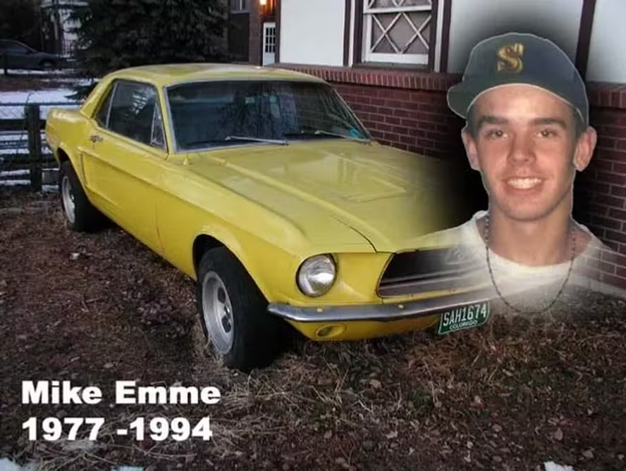

Setembro Amarelo: Conversar sobre bem-estar mental é também zelar pela vida

Setembro Amarelo: Conversar sobre bem-estar mental é também zelar pela vida
Em setembro, a iniciativa “Setembro Amarelo” destaca o quanto é crucial a atenção à saúde da mente e a prevenção contra o suicídio. O objetivo é estimular conversas, desmistificar tabus e deixar claro que procurar auxílio não é um sinal de fragilidade. Mas você sabe o porquê setembro é o “mês amarelo”?
O Carro que Deu Origem a Tudo
Em 1994, no Colorado (EUA), vivia um jovem de 17 anos chamado Mike Emme. Conhecido por seus amigos como um rapaz muito generoso e habilidoso, Mike comprou um Ford Mustang 1968 antigo e precisando de reparos. Ele mesmo desmontou o carro, consertou o motor e o pintou de amarelo-vivo. O veículo virou sua marca registrada na cidade.
️ A Noite do Funeral e a Ideia das Fitas
Porém, Mike sofria com problemas psicológicos que ninguém ao seu redor conseguiu notar. Em setembro de 94', ele tirou a própria vida dentro do próprio carro amarelo. Abalados e sem entender o que havia acontecido, seus pais (Dale e Darlene Emme) e seus amigos decidiram que precisavam fazer algo para evitar que outras famílias passassem pela mesma dor. Na noite do velório, a mãe de Mike e um grupo de adolescentes encheram uma cesta com fitas amarelas amarradas em cartões. Nesses cartões, eles escreveram mensagens simples, mas poderosas: “Se você estiver em dificuldades, por favor, peça ajuda”.
Eles distribuíram 500 cartões naquela noite.
Na juventude, transformações, exigências acadêmicas, desentendimentos familiares, desafios interpessoais e a sensação de isolamento podem impactar o estado emocional. Sendo assim, é fundamental que o ambiente escolar seja um local propício para que os alunos dialoguem, sentindo-se seguros e valorizados.
A escola Prof. Antônio José Leite, durante o mês de setembro, fara uma campanha sobre a importância da saúde mental e da prevenção do suicídio. A iniciativa, busca incentivar o diálogo, combater preconceitos e mostrar que pedir ajuda não é sinal de fraqueza.
Escutar atentamente um indivíduo, expressar cuidado e encorajar a procura por apoio de um adulto de confiança ou de um especialista são ações capazes de gerar um impacto positivo. Igualmente importante é evitar fazer julgamentos ou minimizar os sentimentos expressos pela outra pessoa.
A campanha Amarelo de Setembro reforça uma ideia que deveria perdurar o ano inteiro: ninguém precisa atravessar adversidades em solidão. Debater sobre a saúde mental auxilia a romper o silêncio e colabora para a formação de um corpo discente mais receptivo, atento e solidário.
Por que Setembro? E como chegou ao Brasil?
A Organização Mundial da Saúde (OMS) instituiu o dia 10 de setembro como o Dia Mundial de Prevenção ao Suicídio. Inspirados na história de Mike e na data da OMS, a Associação Brasileira de Psiquiatria (ABP) e o Conselho Federal de Medicina (CFM) trouxeram a campanha para o Brasil em 2014, batizando-a de Setembro Amarelo. Durante todo o mês, monumentos públicos (como o Cristo Redentor e o Congresso Nacional) são iluminados de amarelo para chamar a atenção para a causa.
Mais do que adotar uma cor por um período determinado, a campanha propõe um convite para observarmos aqueles que nos cercam e lembrarmos que zelar pelo bem-estar da mente é, igualmente, uma maneira de zelar pela existência.
Feito por: @v9xgury